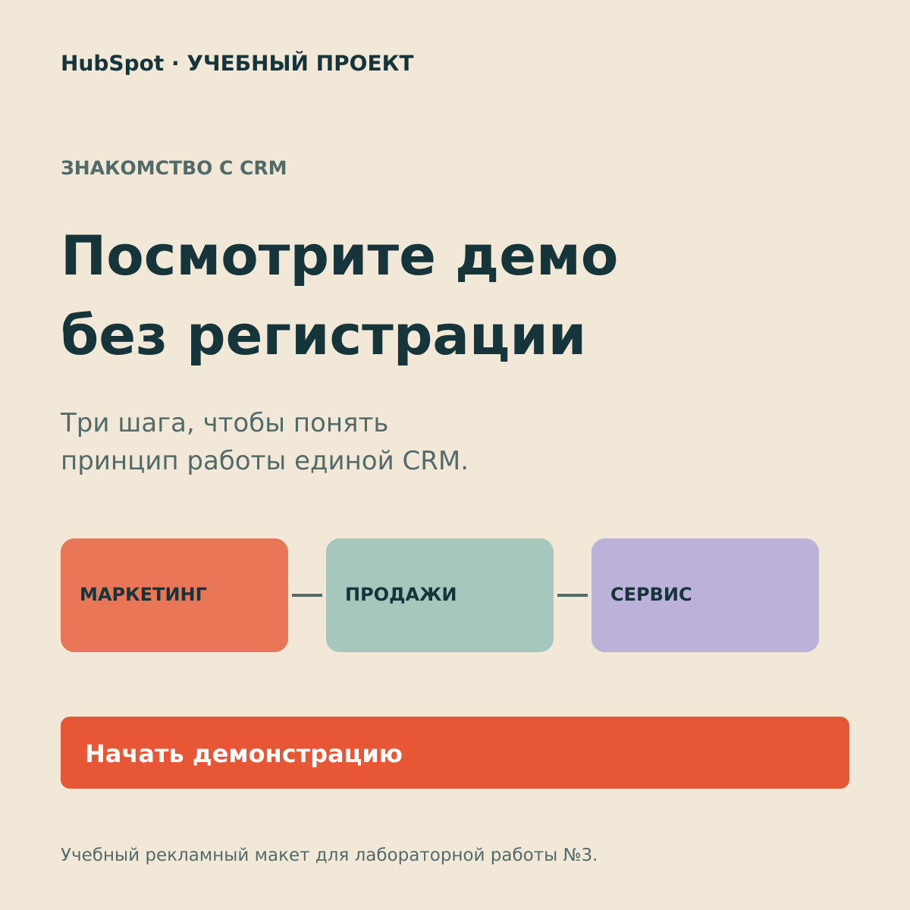
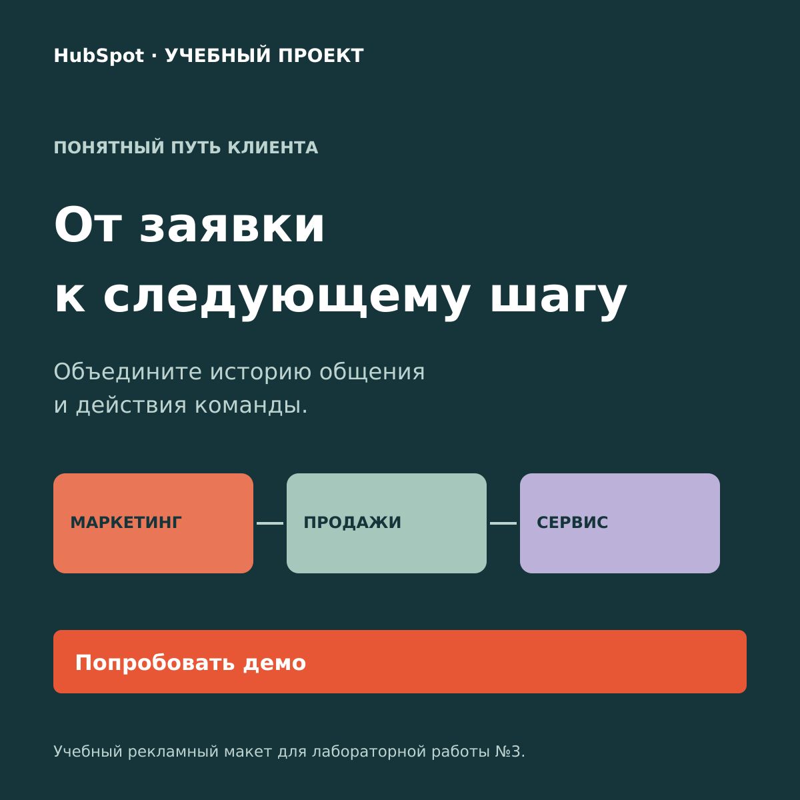

1. Общая история клиента
Сообщение для руководителей маркетинга и продаж: сохранять контекст обращения в одной системе.

ЭТАП 1 · ТАРГЕТИРОВАННАЯ РЕКЛАМА
Статичные баннеры 1200 × 1200. Макеты созданы в формате SVG; исходники доступны для просмотра и редактирования в GitHub. Это учебные примеры рекламы HubSpot.
Сообщение для руководителей маркетинга и продаж: сохранять контекст обращения в одной системе.
Сообщение для тех, кто хочет сначала познакомиться с продуктом: короткая демонстрация без создания аккаунта.

Сообщение о последовательной работе с клиентом: от получения заявки до согласованного действия команды.
